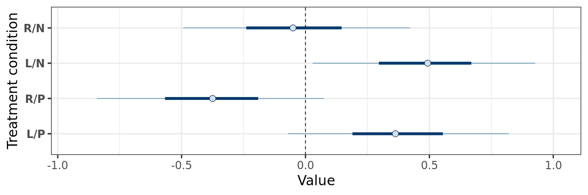
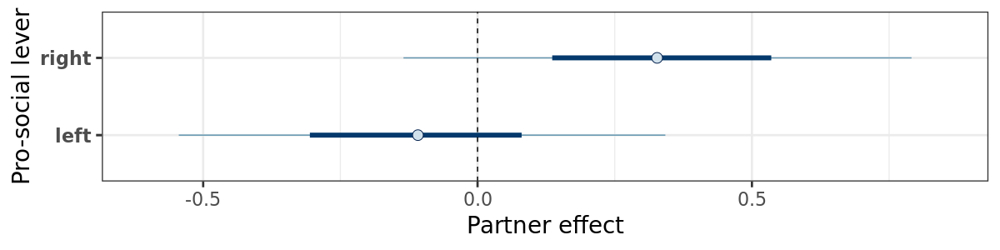
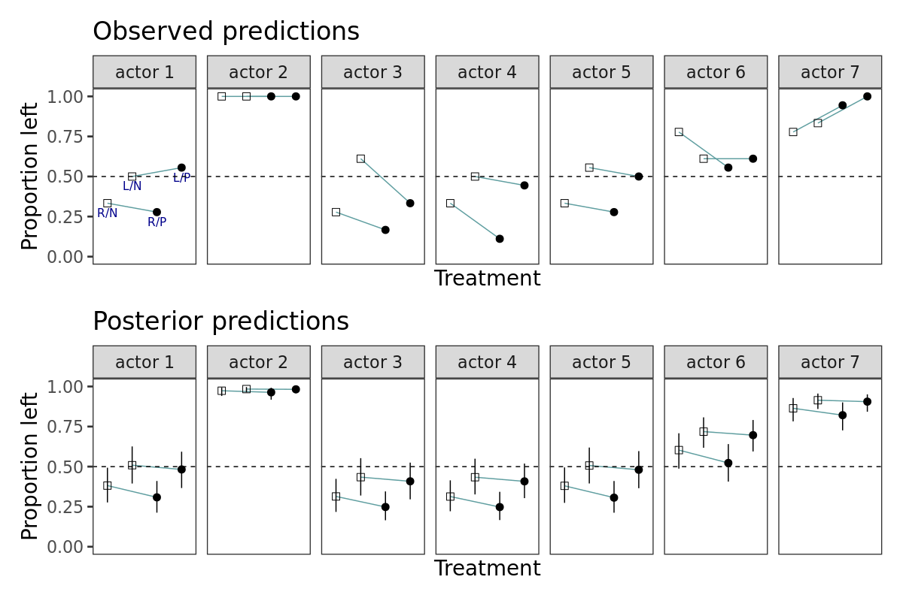
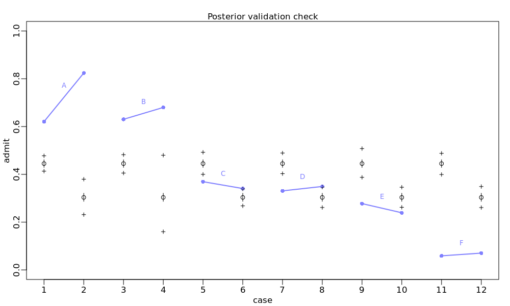

Integer Models
EES 5891-03
Bayesian Statistical Methods
Jonathan Gilligan
Class #16: Tuesday, October 25 2022
Integer Models
Counting Events
- Counting events:
- Outcome variable is a whole number (0, 1, 2, …)
- Definition: treatment condition is the
combination of all the predictor variables.
- Each combination is a different treatment condition.
- Two approaches:
- Treat each event separately, with a probability \(p\) that depends on the treatment
condition (predictor variables).
- Outcome is 0 or 1
- Bernoulli distribution Like a coin toss with probability \(p\) of getting heads
- Equivalent: Binomial distribution with one trial \(\text{Binomial}(1, p)\)
- Outcome is 0 or 1
- Group events by treatment condition and sum the events
- Outcome is 0, 1, 2, …
- Binomial distribution \(\text{Binomial}(N, p)\), where \(N\) is the number of trials for the treatment condition.
- Treat each event separately, with a probability \(p\) that depends on the treatment
condition (predictor variables).
Analyzing Counting Events
- The quadratic approximation
quap()only works well for Normal posterior distributions. - Bernoulli, Binomial, and Poisson
distributions are very different to Normal distributions, so
quapdoesn’t work. - Use MCMC analysis (
ulam). - Homework exercise 11M7 examines the difference between
quapandulamfor counting data.
Example: Chimpanzee Altruism
Chimpanzee Altruism
- A chimpanzee pulls either the right or left lever to get food
- One lever is pro-social: When the chimp gets the food, a separate tray of food is sent to the other side of the table
- Treatment conditions:
- Pro-social lever on the left or right
- The other side of the table is empty, or has a partner chimpanzee
- Count the number of times the chimp pulls the pro-social lever.
Data
-
actor: Which chimpanzee is pulling the levers (1–7) -
condition: Is there a partner (0 = no, 1 = yes) -
prosoc_left: Which side is the pro-social lever on? (0 = right, 1 = left) -
pulled_left: Outcome variable. Did the chimp pull the left lever (0 = no, 1 = yes) - Create a
treatmentvariable:- pro-social on the right, no partner
- pro-social on the left, no partner
- pro-social on the right, partner
- pro-social on the left, partner
Model
\[ \begin{align} L &\sim \text{Binomial}(1, p) \\ \text{logit}(p) &= \alpha_{\text{actor}} + \beta_{\text{treatment}} \\ \alpha &\sim \text{Normal}(?, ?) \\ \beta &\sim \text{Normal}(?, ?) \\ \end{align} \]
- Each chimp has a different \(\alpha\), but the same \(\beta_{\text{treatment}}\).
- In Chapter 13 (Multilevel models) we’ll make a model with different \(\beta\) for each chimp.
Choosing priors
- Wide (uninformative) vs. narrow (informative) priors:

Fit the model
dat_trimmed <- d %>% select(pulled_left, actor, treatment) %>%
mutate(treatment = as.integer(treatment))
mdl_chimp <- ulam(
alist(
pulled_left ~ dbinom(1, p),
logit(p) <- a[actor] + b[treatment],
a[actor] ~ dnorm(0, 1.5),
b[treatment] ~ dnorm(0, 0.5)
), data = dat_trimmed, chains = 4, cores = 4, log_lik = TRUE)## mean sd 5.5% 94.5% n_eff Rhat4
## a[1] -0.44 0.33 -0.95 0.07 446 1.01
## a[2] 3.90 0.75 2.80 5.19 1256 1.00
## a[3] -0.74 0.34 -1.27 -0.18 612 1.01
## a[4] -0.74 0.33 -1.28 -0.21 552 1.01
## a[5] -0.44 0.33 -0.97 0.08 462 1.02
## a[6] 0.49 0.32 -0.04 1.01 576 1.01
## a[7] 1.96 0.43 1.29 2.65 1056 1.00
## b[1] -0.04 0.28 -0.49 0.41 436 1.01
## b[2] 0.47 0.29 0.01 0.93 405 1.02
## b[3] -0.39 0.29 -0.85 0.06 415 1.02
## b[4] 0.35 0.28 -0.09 0.80 413 1.02What does this mean?
- \(\alpha\) parameters:
- This shows the posteriors with 50% and 95% highest-density intervals averaged over all treatment conditions
- What does it mean?
- 3 chimps are more likely to pull the left lever
- 4 chimps are more likely to pull the right lever
- This may reflect handedness, especially for chimp #2.
Partner Effects
- Label treatment effects and compare the \(\beta\) parameters
- Which lever is pro-social? / Is there a partner?

- Difference between partner and no-partner

library(tidybayes)
library(tidybayes.rethinking)
library(bayesplot)
treatment_levels = c("R/N", "L/N", "R/P", "L/P")
post <- spread_draws(mdl_chimp, a[actor], b[treatment]) %>%
mutate(treatment = treatment_levels[treatment]) %>%
select(-a) %>%
pivot_wider(names_from = "treatment", values_from = "b")
mcmc_intervals(post, pars = vars(contains("/"))) +
geom_vline(xintercept = 0, linetype = "dashed") +
labs(x = "Value", y = "Treatment condition")post_diff <- mutate(post, right = `R/N` - `R/P`,
left = `L/P` - `L/N`)
mcmc_intervals(post_diff, pars = c("right", "left")) +
geom_vline(xintercept = 0, linetype = "dashed") +
labs(x = "Partner effect", y = "Pro-social lever")- Notice the opposite sign for right and left
-
\(\beta\) is the change in log-odds
to pull the left lever:
- Pro-social for the “L” treatment, anti for “R”.
Posterior Predictions

- A partner does not consistently change the probability of pulling the pro-social lever
- The model does not accurately predict the effect of adding a partner.
- The biggest effect seems to be the intercept, followed by the pro-social lever
- The intercept effect suggests that handedness matters more than pro-social motives
Aggregated Counts
Aggregated Chimp Model
-
Aggregate data
-
Now fit a model to it
Comparing the models
-
Compare the models
- Why the big difference?
- Imagine you toss a coin 9 times and get heads the first 6 times and then 3 tails: \[P(1, 1, 1, 1, 1, 0, 0, 0) = p^6 (1 - p)^{9 - 6}\]
- But the binomial probability \(P_{\text{binomial}}(6 | 9, p)\) considers
all the ways you could get 6 heads in 9 tosses: \[P(6 | 9, p) = \frac{6!}{6! (9 - 6)!} p^6 (1 -
p)^{9 - 6}\]
- This factor is the reason we can’t easily compare a Bernoulli model of the individual events with a Binomial model of the aggregated counts.
Graduate School Admissions
| dept | applicant.gender | admit | reject | applications | gid |
|---|---|---|---|---|---|
| A | male | 512 | 313 | 825 | 1 |
| A | female | 89 | 19 | 108 | 2 |
| B | male | 353 | 207 | 560 | 1 |
| B | female | 17 | 8 | 25 | 2 |
| C | male | 120 | 205 | 325 | 1 |
| C | female | 202 | 391 | 593 | 2 |
| D | male | 138 | 279 | 417 | 1 |
| D | female | 131 | 244 | 375 | 2 |
| E | male | 53 | 138 | 191 | 1 |
| E | female | 94 | 299 | 393 | 2 |
| F | male | 22 | 351 | 373 | 1 |
| F | female | 24 | 317 | 341 | 2 |
Model the Data
Interpreting the significance
## mean sd 5.5% 94.5% n_eff Rhat4
## a[1] -0.22 0.04 -0.28 -0.16 1511 1.00
## a[2] -0.83 0.05 -0.91 -0.75 1494 1.01- What is the significance of the gender difference in
a?- Relative difference on logit scale
- Absolute difference in odds of getting admitted
post <- tidy_draws(mdl_gs)
diff_a <- pull(post, "a[1]") - pull(post, "a[2]")
diff_p <- inv_logit(pull(post, "a[1]")) - inv_logit(pull(post, "a[2]"))
precis(list(diff_a = diff_a, diff_p = diff_p))## mean sd 5.5% 94.5% histogram
## diff_a 0.6120066 0.06072354 0.5169900 0.7104636 ▁▁▁▂▇▇▅▂▁▁
## diff_p 0.1419666 0.01366396 0.1204831 0.1641566 ▁▁▁▃▇▇▅▂▁▁Posterior Validation Check

- The model makes terrible predictions
- Only 2 departments admit a lower percentage of women than men
- Our model didn’t look department by department. It looked at all women applicants vs. all men, without considering that more women apply to some departments and more men apply to others:
A Better Model
dat_list <- d %>%
mutate(dept = ordered(dept), dept_id = as.integer(dept)) %>%
select(admit, applications, gid, dept_id)
mdl_gs_2 <- ulam(
alist(
admit ~ dbinom(applications, p),
logit(p) <- a[gid] + delta[dept_id],
a[gid] ~ dnorm(0, 1.5),
delta[dept_id] ~ dnorm(0, 1.5)
), data = dat_list, chains = 4, cores=4, iter=4000)## mean sd 5.5% 94.5% n_eff Rhat4
## a[1] -0.53 0.53 -1.36 0.34 714 1.01
## a[2] -0.43 0.53 -1.25 0.44 716 1.01
## delta[1] 1.11 0.53 0.24 1.94 728 1.01
## delta[2] 1.07 0.53 0.18 1.90 719 1.01
## delta[3] -0.15 0.53 -1.03 0.69 710 1.01
## delta[4] -0.18 0.53 -1.05 0.65 714 1.01
## delta[5] -0.62 0.54 -1.50 0.21 730 1.01
## delta[6] -2.18 0.54 -3.07 -1.32 755 1.01post <- tidy_draws(mdl_gs_2)
diff_a <- pull(post, "a[1]") - pull(post, "a[2]")
diff_p <- inv_logit(pull(post, "a[1]")) -
inv_logit(pull(post, "a[2]"))
precis(list(diff_a = diff_a, diff_p = diff_p))## mean sd 5.5% 94.5%
## diff_a -0.09691668 0.07978308 -0.22626653 0.029650330
## diff_p -0.02163657 0.01816266 -0.05171786 0.006653057
## histogram
## diff_a ▁▁▁▁▂▅▇▇▅▂▁▁▁▁
## diff_p ▁▁▁▂▃▅▇▇▅▂▁▁▁▁d %>%
group_by(dept) %>%
mutate(pg = applications / sum(applications)) %>%
ungroup() %>%
select(dept, applicant.gender, pg) %>%
pivot_wider(names_from = "dept", values_from = "pg") %>%
kable(digits = 2)| applicant.gender | A | B | C | D | E | F |
|---|---|---|---|---|---|---|
| male | 0.88 | 0.96 | 0.35 | 0.53 | 0.33 | 0.52 |
| female | 0.12 | 0.04 | 0.65 | 0.47 | 0.67 | 0.48 |